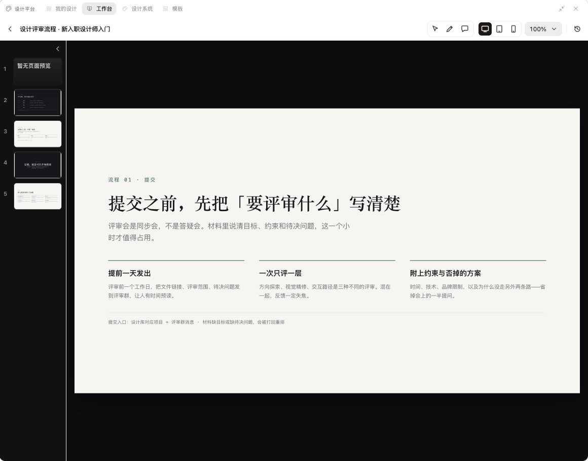
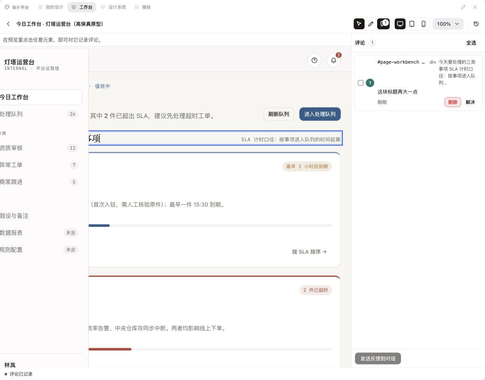
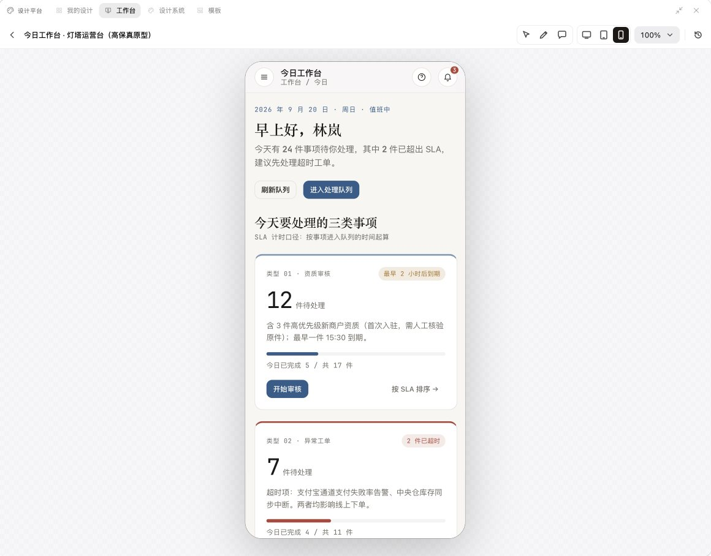
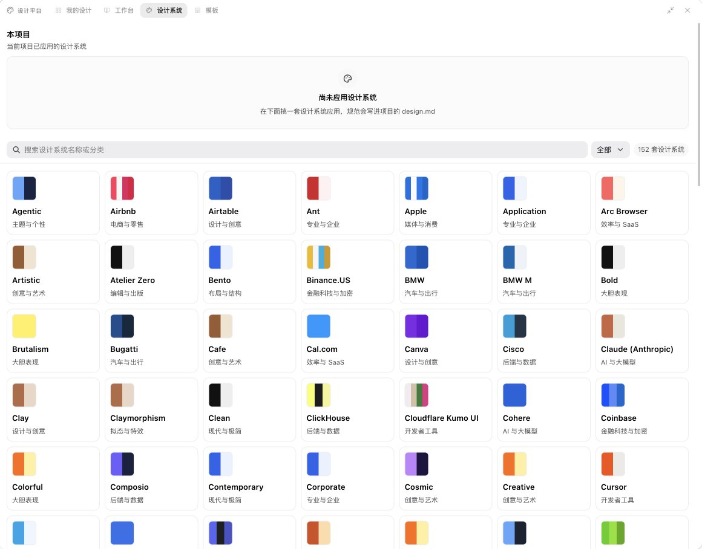

分步向导选择要做的内容和模板，模板按用途分组并支持搜索，也可以从空白开始。
BRAIN DESIGN
在对话里做设计，在面板里改到满意
从模板或设计系统出发，让 Agent 生成幻灯片、网页与应用原型、线框图、海报和数据报告。设计稿是可直接预览的 HTML，在面板里微调、标注意见并交回对话继续迭代，完成后导出 PDF 或 PPTX。
333 个设计技能152 套设计系统桌面 / 平板 / 手机预览导出 PDF 与 PPTX
01 / 功能
逐页查看幻灯片，切换桌面、平板和手机尺寸，直接修改文字与样式。
在预览里点选任意元素记录修改意见，一次性发回对话，由 Agent 逐条处理。
02 / 界面




03 / 使用场景
“用瑞士国际主义风格做一份 10 页的季度经营回顾。”
“给运营后台首页做一个高保真原型，要能在手机上看。”
“把这份方案的标题再放大一点，第三页换成数据图表。”
04 / 随插件安装
- 设计平台扩展
- 提供我的设计、工作台、设计系统和模板四个页面。
- 333 个设计技能
- 覆盖演示文稿、网页与应用原型、线框图、品牌视觉、动效视频和数据可视化。
- 4 条设计规则
- 设计产物先生成可预览的 HTML；需要确认时在对话中提问；颜色与字体优先遵循设计系统，修改时保留已有设计文件。